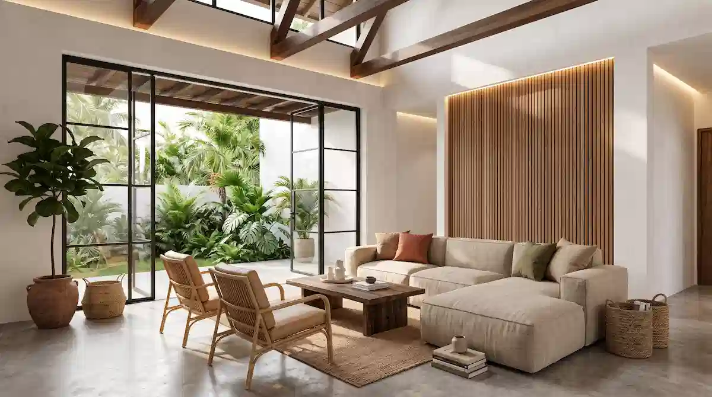

Visualisasi 3D desain rumah adalah gambar atau video realistis dari model digital bangunan yang memungkinkan pemilik melihat bentuk, material, dan suasana rumah sebelum pembangunan dimulai.
Menggunakan layanan render 3D membantu Anda memutuskan detail arsitektur sebelum biaya konstruksi dikeluarkan. Output yang dihasilkan umumnya meliputi render eksterior, render interior, hingga video walkthrough. Perlu diingat bahwa visualisasi 3D tidak menggantikan peran gambar kerja yang dipakai kontraktor untuk membangun di lapangan. Melakukan revisi di tahap render jauh lebih murah daripada mengubah fisik bangunan setelah berdiri.
1. Apa Itu Visualisasi 3D Desain Rumah dan Output Apa Saja yang Tersedia?
Visualisasi 3D dibuat dari model digital yang disusun berdasarkan denah dan konsep desain arsitek. Model tersebut diberi tekstur material, efek pencahayaan, dan vegetasi lingkungan sekitar sehingga tampil persis seperti foto bangunan yang sudah berdiri.
Berikut adalah beberapa pilihan output yang umum tersedia dalam perancangan 3D:
- Render eksterior: Menampilkan fasad depan, bentuk atap, lanskap taman, serta simulasi suasana siang atau malam hari.
- Render interior: Menampilkan penataan ruang tamu, dapur, kamar tidur, lengkap dengan skema material dan furnitur.
- Video walkthrough: Animasi sinematik yang mengajak Anda berkeliling menjelajahi seluruh sudut bangunan secara virtual.
- Site plan atau tampak 3D: Penataan tiga dimensi untuk melihat posisi bangunan terhadap batas lahan dan lingkungan sekitar.
2. Apa Manfaat Visualisasi 3D Sebelum Membangun?
Penerapan teknologi visualisasi 3D memberikan berbagai keuntungan praktis bagi calon pemilik rumah:
- Melihat hasil sebelum biaya keluar: Ketidakcocokan desain atau tata letak dapat langsung dikoreksi lebih dini.
- Memudahkan keputusan keluarga: Seluruh anggota keluarga mendapatkan gambaran visual yang sama, tidak hanya berasumsi dari denah 2D.
- Mengurangi salah paham dengan kontraktor: Bentuk fasad dan spesifikasi material dapat dikomunikasikan secara jelas dan terukur.
- Menguji material dan pencahayaan: Memastikan bagaimana paduan warna dan pencahayaan lampu terlihat saat malam hari.
- Mendukung keperluan profesional: Menjadi media presentasi untuk pengajuan pembiayaan maupun pemasaran properti.
Untuk hunian berkonsep tropis di daerah beriklim hangat seperti Surabaya, render 3D sangat membantu memeriksa letak bukaan jendela, kanopi teduhan, dan area hijau agar sesuai dengan panduan rumah tropis modern yang sejuk.

3. Apa Bedanya Visualisasi 3D dengan Gambar Kerja?
Meski saling melengkapi, visualisasi 3D dan gambar kerja Detail Engineering Design (DED) memiliki perbedaan peran yang fundamental:
| Aspek Perbandingan | Visualisasi 3D (Render) | Gambar Kerja (DED) |
|---|---|---|
| Tujuan Utama | Menunjukkan tampilan akhir, estetika, dan suasana ruang. | Menjadi acuan teknis pelaksanaan konstruksi di lapangan. |
| Bentuk Output | Gambar potret realistis atau video animasi 3D. | Dokumen teknis berisi ukuran, denah struktur, dan utilitas. |
| Pengguna Utama | Pemilik rumah, keluarga, dan pengambil keputusan. | Kontraktor, tukang bangunan, dan tim pengawas. |
| Kegunaan Anggaran | Membantu memilih kombinasi desain dan material. | Menjadi dasar perhitungan RAB yang rinci dan akurat. |
4. Bagaimana Tahapan Pembuatan Visualisasi 3D?
Proses pengerjaan visualisasi 3D arsitektur dilakukan melalui tahapan terstruktur berikut:
- Briefing awal: Diskusi kebutuhan ruang, pilihan gaya arsitektur, dan patokan anggaran bersama tim arsitek.
- Penyusunan konsep: Pembuatan denah 2D awal hingga mencapai kesepakatan tata ruang.
- Modeling 3D: Mambangun bentuk massa bangunan tiga dimensi secara digital.
- Material & lighting: Mengaplikasikan tekstur bahan (kayu, batu, cat) serta mengatur skema pencahayaan.
- Rendering & review: Proses komputasi render dan penyerahan draf awal untuk ditinjau oleh klien.
- Revisi & finalisasi: Penyesuaian detail sesuai masukan, dilanjutkan dengan penyerahan hasil gambar resolusi tinggi.
Setelah tahap visualisasi 3D disetujui, proses dilanjutkan ke pembuatan gambar teknis DED serta perhitungan Rencana Anggaran Biaya (RAB). Panduan urutan lengkapnya dapat dibaca pada artikel panduan tahapan pembangunan rumah dari nol.
5. Apa yang Perlu Disiapkan Klien agar Hasil Render Sesuai Harapan?
Agar proses pembuatan visualisasi 3D berjalan lancar dan efisien, persiapkan beberapa data berikut:
- Data lahan: Ukuran lebar dan panjang, bentuk kavling, serta orientasi arah hadap matahari.
- Daftar kebutuhan ruang: Jumlah kamar tidur, kamar mandi, hingga area khusus seperti ruang kerja atau taman dalam.
- Referensi visual: Contoh foto rumah atau gaya interior yang disukai maupun yang ingin dihindari.
- Target anggaran: Batasan estimasi biaya agar pemilihan material dalam render tetap realistis untuk dibangun.
- Pintu keputusan tunggal: Kesepakatan internal keluarga agar revisi desain tidak berputar-putar.
6. Kesalahan Umum saat Memanfaatkan Visualisasi 3D
- Menganggap render sebagai dokumen cetak biru: Lupa bahwa detail ukuran dan pembesian berada di gambar DED.
- Hanya fokus pada fasad luar: Kurang memperhatikan kenyamanan dan sirkulasi tata ruang bagian dalam.
- Tidak mengecek sampel material asli: Tekstur dan warna fisik cat/keramik bisa sedikit berbeda dengan pencahayaan layar monitor.
- Melakukan revisi tanpa batas: Berpotensi memperlambat jadwal pembangunan dan menambah biaya konsultasi.
- Melewatkan evaluasi RAB: Menghasilkan desain yang sangat megah di gambar 3D tetapi sulit dieksekusi sesuai anggaran.